Skylineターゲット質量分析環境では、質量分析計のrawデータをSkylineドキュメントにインポートし、情報を視覚的に表示します。本来プロテオミクスの使用目的で開発されたSkylineですが、一般の低分子でも作業できるように拡張されています。本チュートリアルは、単一の低分子のターゲットを、外部校正曲線法と安定同位体標識の内部標準を用いて定量した比較的簡単な例を説明します。
本チュートリアルでは、みなさんが実施していそうな（薬物動態アッセイなどの）実験メソッドで、TQ-MSを用いて（この例では血漿から）取得したデータのターゲット定量について学習します。本データセットの分析では、以下を学習します。
また、このチュートリアルのベースとなっているSkylineチュートリアルウェビナー16の後半もご覧ください。
Skylineは、ターゲット定量的質量分析研究のためのメーカーに依存しないプラットフォームの提供を目指しており、Agilent、SCIEX、Bruker、Shimadzu、Thermo-Scientific、およびWatersの各メーカーの装置からrawデータをインポートできます。さまざまな装置プラットフォームからデータをインポートすることで、装置間の比較および複数施設間での共同研究や比較が容易になります。これは、プロテオミクスの分野で何年もそうであったように、低分子をターゲットとするためにSkylineを使用する際も同様です。
まだ「Skyline低分子ターゲット」チュートリアルをご覧になっていない場合はぜひご覧いただき、Skylineがどのように低分子の化学式や付加物を記述するのかに関するいくつかの基礎知識をご確認ください。
チュートリアルを始める前に、以下のzipファイルをダウンロードしてください。
https://skyline.ms/tutorials/SmallMoleculeQuantification.zip
この中のファイルを、以下のコンピュータ上のフォルダに解凍します。
C:\Users\bspratt\Documents
これにより以下の新しいフォルダが作成されます。
C:\Users\bspratt\Documents\SmallMoleculeQuant
フォルダには、このチュートリアルに必要なすべてのファイルが含まれています。
本チュートリアルを始める前にSkylineを使用していた場合には、Skylineをデフォルト設定に戻すことをお勧めします。デフォルト設定に戻すには、以下の操作を行います。
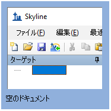
Skylineのこのインスタンスのドキュメント設定がデフォルトにリセットされました。
このチュートリアルは低分子に関するものであるため、以下のようにして分子用インターフェイスを選択できます。
Skylineは、Skylineウィンドウの右上隅の分子アイコン  で表示される分子モードで動作しています。元のプロテオミクスメニューやコントロールが表示されなくなり、低分子の分析に集中できます。
で表示される分子モードで動作しています。元のプロテオミクスメニューやコントロールが表示されなくなり、低分子の分析に集中できます。
本実験は、生物学的分析法の検証に関するFDAガイダンスに従って設計されたため、研究試料以外のものも含まれています。プレートレイアウトに関する全説明や、このような研究で典型的に使用される実行順序が公開されています（https://www.ncbi.nlm.nih.gov/pubmed/29039849）。簡単に言うと、本データセットの試料は、以下のように96個のウェルプレートに配列されました。

ブランク、または「ゼロ」標準には内部標準のみが含まれており、ダブルブランクには標準が一切含まれていません。
校正曲線試料（Calibration curve）とは、校正曲線作成用の希釈系列です。
QC試料は「よく知っている未知試料 (Known Unknowns)」です。これは品質管理用の比較対照試料であり、本研究では未知試料として扱われます。実際には、結果がどうなるかはわかっており、したがってそれを使用して測定の精度を確認することができます。
血清SPQCはプールQC血清、全研究試料の混合物であり、実験開始時、中間点、実験終了時の複数ポイントで分析を実行して、研究を通して定量的再現性が一定しているかを確認します。
NIST SRM 1950は、国立標準技術研究所（National Institute for Standards and Technology、NIST）からのプールされた血漿標準であり、「正常な」血漿代謝産物測定の参照基準として全研究者が利用できるものです。これは、さまざまな研究所における研究での参照となります。
注入は以下のような順序で実行されました。
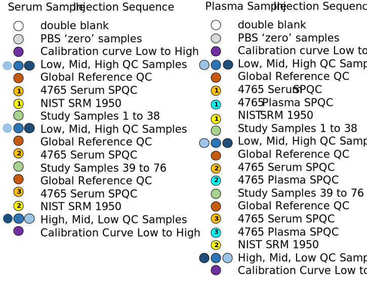
これらの試料の質量分析データの収集では、全部で113回の注入が行われました。
本研究では、分子と内部標準の2つのターゲットしかありません。内部標準とは、同位体で標識された分子の異性体であり、このため両者は共溶出します。また、代理標準とする分子を設定することで、内部標準以外の他の分子と関連づけることもできます。代理標準法は、「Skyline高分解能メタボロミクス」チュートリアルで取り上げています。
低分子トランジションリストをSkylineドキュメントに取り込む最も簡単な方法は、空のドキュメントから始めて、[ 編集 ] > [ 挿入 ] > [ トランジションリスト ] メニュー項目を利用することです。
これを開始するには、以下の操作を行います。
Skylineが [ トランジションリストの挿入 ] フォームを表示します。

通常は、トランジションリストをExcelや他の外部ソースからコピーして貼り付けますが、この場合はトランジションリストが十分に小さいためここに表示します。
DrugX,Drug,light,283.04,1,129.96,1,26,16,2.7
DrugX,Drug,heavy,286.04,1,133.00,1,26,16,2.7
Skylineは、[ トランジションリストのインポート：列の識別 ] フォームを表示します。このフォームでは、Skylineに各列が何を意味するかを指示できます。
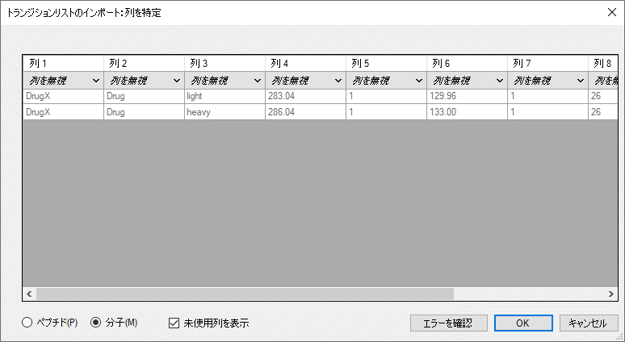
コピーしたデータには列ヘッダーがないため、最初は各列が「列を無視」として設定されます。
[ トランジションリストのインポート：列の識別 ] フォームは以下のようになります。
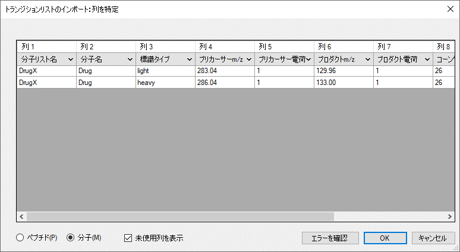
|
注：本チュートリアルでは、このターゲットに対してm/zと電荷値のみを設定しています。Skylineは、化学式や同位体標識など、さらに高レベルの記述も取り扱うことができます。フルスキャンや高分解能データを使って作業するときには、化学式があるとSkylineが同位体分布を計算できるため特に有用ですが、今回のようなSRMデータの場合は、m/zと電荷を使用するのが適切です。 |
新たにインポートされたターゲットを詳細まですべて見るには、以下の操作を行います。
これでSkylineウィンドウは以下のようになります。
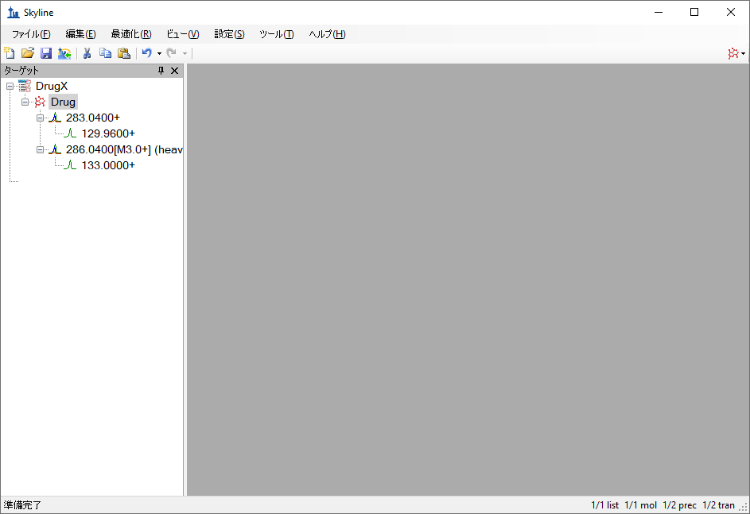
次の手順は、今回実験的に用いる質量分析結果をインポートできるように、「トランジションの設定」が正しく設定されていることを確認するものです。これには、以下の手順を実行します。
[ トランジション設定 ] フォームは以下のようになります。

[ トランジション設定 ] フォームは以下のようになります。
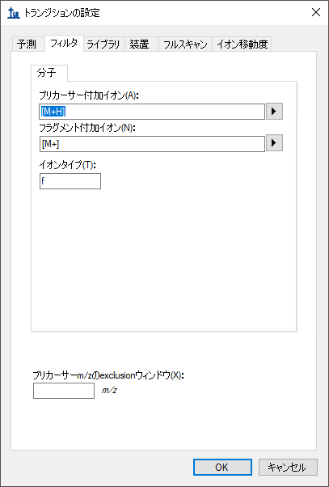
[ イオンタイプ ] フィールドの値「f」は、フラグメントイオンのトランジションのみが測定されることを示します。プリカーサーイオンも測定したい場合には、「f, p」を使用します。
[ 装置 ] タブは、この実験に対してはデフォルト値でうまく行きます。ただし皆さん自身の作業においては、最小/最大m/z値が実際の装置の状況に合うことを確認してください。この設定の目的は、使用している質量分析計が実際に測定できないターゲットトランジションを追加できないようにすることです。
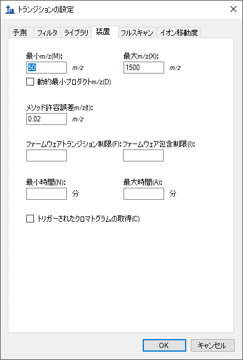
[ 装置 ] タブのもう1つの重要な設定が [ メソッド許容誤差 ] です。これは、rawデータファイルに保存される装置メソッドのm/z値がSkylineターゲットリストのm/z値とどのくらいよく適合する必要があるかを決定します。Skylineでのデフォルト値は0.055です。これは試験で使用される元のSRMファイルが小数第1位（たとえば784.3）まで指定されていたものの、多少の丸め誤差を含んでいたためです。Skylineからメソッドをエクスポートする場合は、もっと許容誤差を小さくできる可能性があります。
次の手順は、実験的な質量分析計結果のインポートです。
この実験には、関連する113個の質量分析計データファイルが含まれます。このような場合、まずごく一握りの未知試料ランと、校正曲線作成用ランと品質管理（QC）用ラン全部のデータファイルをインポートすると有用です。さらにより単純なドキュメントから開始して、まずは数回のランと、たとえば校正曲線作成用ランの最も高濃度なもののデータファイルだけをインポートして、データ品質を確認するところから開始したいこともあるでしょう。
ここでは、より野心的なアプローチを取って以下の手順を実行します。
[ 結果をインポート ] フォームは以下のようになります。
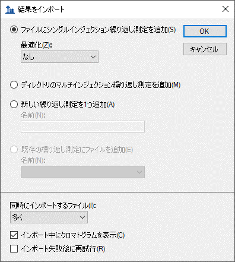
[ 結果ファイルをインポート ] フォームは以下のようになります。
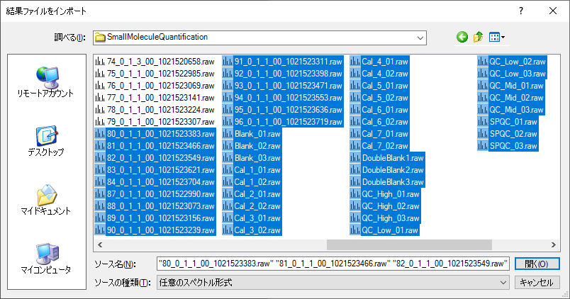
当該ファイルは30秒程度でインポートされ、Skylineウィンドウは以下のようになります。
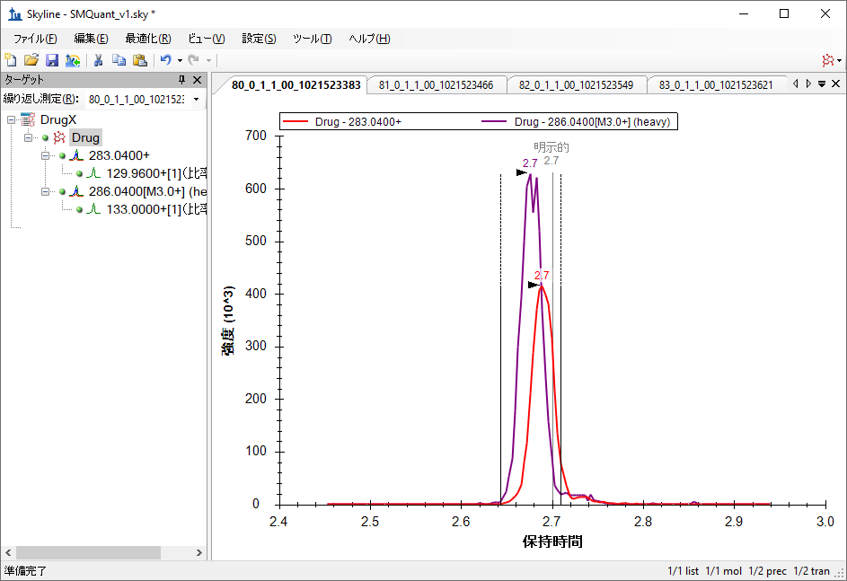
Skyline概要グラフを利用して個別のターゲットを表示するには、以下の操作を行います。
これでSkylineウィンドウは以下のようになります。
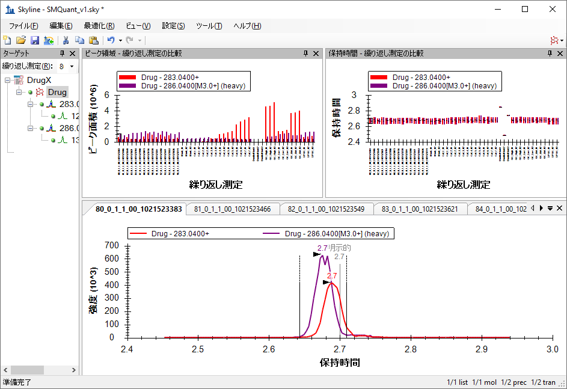
[ 保持時間 – 繰り返し測定の比較 ] ウィンドウを見ると、「DoubleBlank」という名前の繰り返し測定に異常値があり、Skylineが他の測定と同一の保持時間でピークを選択していないことがわかります。
これらのランから１つ選び、クロマトグラムを詳しく見るには、以下の操作を行います。
皆さんもSkylineがこの繰り返し測定から、測定ターゲットの薬物と同位体標識物のきれいなピークを見つけるとは期待していないでしょう。なぜなら「DoubleBlank」という用語は、どちらも試料内に存在しないことを意味しているからです。現在表示しているクロマトグラムグラフには、Skylineがその代わりに選ぶしかなかったピークが示されています。
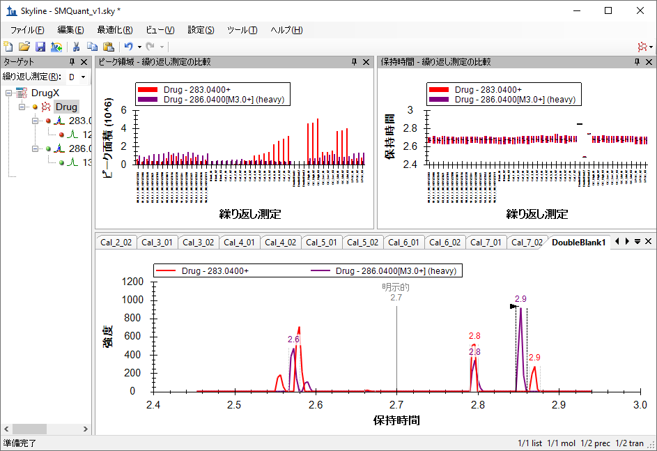
これによってDoubleBlank2およびDoubleBlank3も「明示的」と言う注釈が付いている時間2.7の辺りに明確なピークがないことが明らかになります。これはメソッドが2.7分を予想される溶出時間として明示的に指定していることを意味します。これらもダブルブランクであるため、繰り返し測定には実際のピークは一切期待されません。次は、2.7分で低信号領域が中心となるように手作業でダブルブランク繰り返し測定それぞれの積分を調整します。
ピーク積分を調整するには、この手順を実行します。
ピーク境界はこの新しい値に変わり、元の範囲は以下のように斜線部分でマークされます。
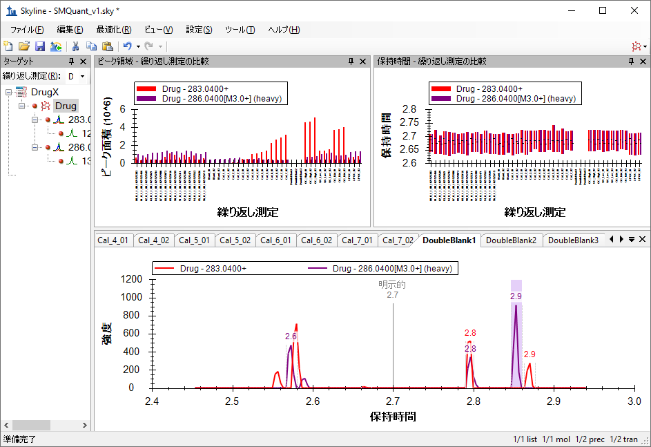
上記の手順を、他の2つの「DoubleBlank」繰り返し測定に繰り返します。
次に定量用校正曲線を設定するには、以下の手順を実行します。
[ 分子設定 ] フォームは以下のようになります。
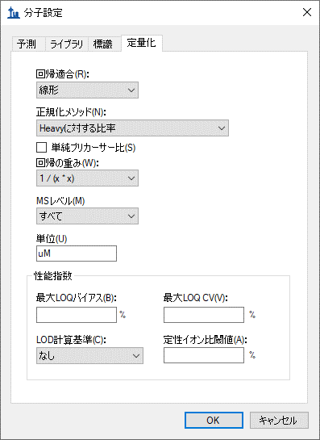
この実験では、線形回帰を用いて同位体標識化合物に対する正規化を行っています。Skylineは、x：なし、1/x、1/(x*x)に応じて、曲線全体で重みを付けるオプションを提供します。本チュートリアルは、濃度の低い校正試料の重みを増加する、回帰の重み「1 / (x*x)」を使用します。[ 単位 ] フィールドは表示目的であり、実験の状況にかなうあらゆる値に設定できます。本実験における濃度はミクロモルで校正されたため、[ 単位 ] フィールドは「uM」に設定されます。
校正曲線は、まだ表示できません。まず、試料タイプと校正曲線作成用試料の濃度を設定する必要があります。
さまざまな繰り返し測定に関する情報を調べ、追加するには、ドキュメントグリッドを使用します。ドキュメントグリッドはSkylineの非常に有用なツールであり、多数のドキュメント詳細をスプレッドシート状のビューで提供します。その多くは、グリッド内でそのまま編集できます。この場合は、以下のようにさまざまな繰り返し測定の詳細を提供する必要があります。
ドキュメントグリッドは以下のようになります。
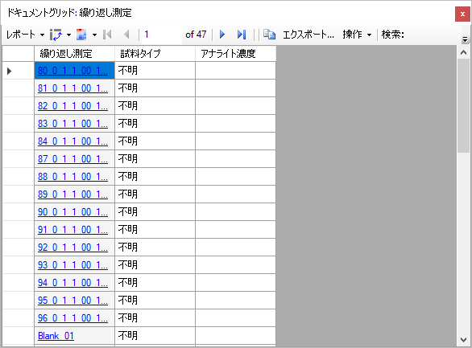
デフォルトでは、すべての繰り返し測定に「不明」の試料タイプ値が与えられています。これは、数字で始まる名前を持つすべての繰り返し測定に希望されるタイプです。これ以降は、以下の操作を行います。
複数選択すべてが、選択の最初の項目と同じ値になります。
必要に応じてこれを繰り返します（または下表まで進みます）。
「SPCQC_」繰り返し測定は違う意味で品質管理であることを思い出しましょう（全研究資料のプーリング）。したがって、これは「不明」のまま残します。
アナライト濃度は手作業で入力できますが、コピーしてグリッドに貼り付ける方がずっと簡単です。
|
ブランク |
||
|
Blank_02 |
ブランク |
|
|
Blank_03 |
ブランク |
|
|
Cal_1_01 |
標準 |
10 |
|
Cal_1_02 |
標準 |
10 |
|
Cal_2_01 |
標準 |
20 |
|
Cal_2_02 |
標準 |
20 |
|
Cal_3_01 |
標準 |
100 |
|
Cal_3_02 |
標準 |
100 |
|
Cal_4_01 |
標準 |
200 |
|
Cal_4_02 |
標準 |
200 |
|
Cal_5_01 |
標準 |
400 |
|
Cal_5_02 |
標準 |
400 |
|
Cal_6_01 |
標準 |
600 |
|
Cal_6_02 |
標準 |
600 |
|
Cal_7_01 |
標準 |
800 |
|
Cal_7_02 |
標準 |
800 |
|
DoubleBlank1 |
ダブルブランク |
|
|
DoubleBlank2 |
ダブルブランク |
|
|
DoubleBlank3 |
ダブルブランク |
|
|
QC_High_01 |
QC |
589 |
|
QC_High_02 |
QC |
589 |
|
QC_High_03 |
QC |
589 |
|
QC_Low_01 |
QC |
121 |
|
QC_Low_02 |
QC |
121 |
|
QC_Low_03 |
QC |
121 |
|
QC_Mid_01 |
QC |
346 |
|
QC_Mid_02 |
QC |
346 |
|
QC_Mid_03 |
QC |
346 |
|
SPQC_01 |
不明 |
|
|
SPQC_02 |
不明 |
|
|
SPQC_03 |
不明 |
完了すると、ドキュメントグリッドは以下のようになります。 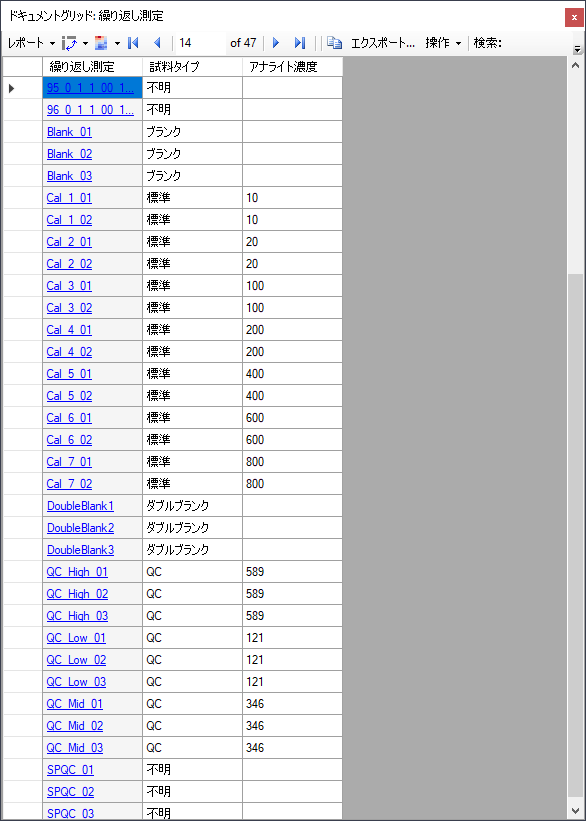
今度は、校正曲線グラフを調べます。
[ 校正曲線 ] フォームは、以下のように表示されます。
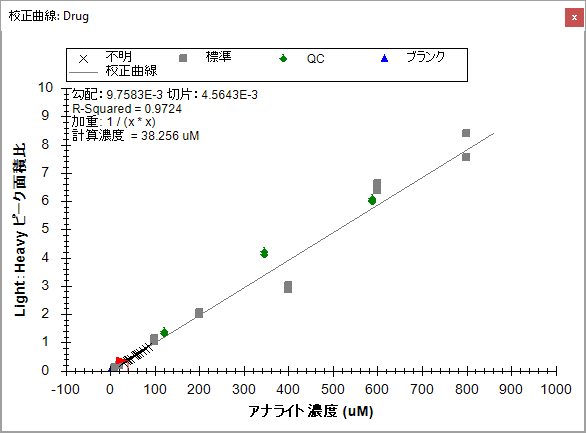
現在選択されている繰り返し測定がダブルブランクの場合は、選択されている繰り返し測定でトランジションがないものについての注記が予想されます。
グラフを見ると、「不明」がXマークとしてほとんどがライトとヘビーの比率1.0から0の間に表示されるのがわかります。
また、校正試料には希望したほどは回帰線に近くないものがあることにも気付かれるでしょう。ドキュメントグリッドを使用してどの程度かけ離れているかに定性的な意味を持たせることで、 適切でない試料をすべて除外することができます。そのためには、以下の手順を実行します。
ドキュメントグリッドは以下のようになります。 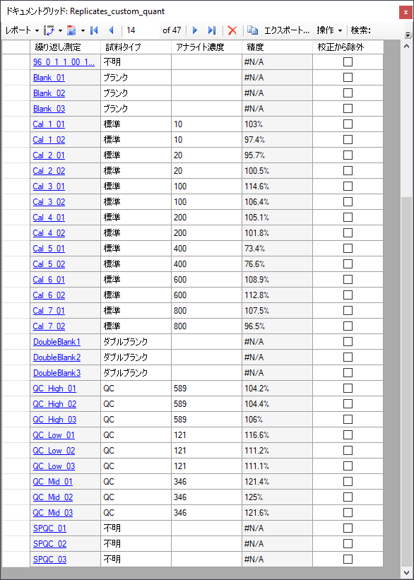
このアッセイが基にしているFDAガイダンスでは、校正点の既知濃度と校正曲線から逆に計算した濃度との間のバイアスは15%以下（精度85％から115%）であるべきと述べてきます。 [ 精度 ] 列は、「Cal_5」がその基準を満たしていないことを示しています。これらの繰り返し測定は、ドキュメントグリッドの [ 校正から除外 ] 列のチェックボックスを使用するか、[ 校正曲線 ] フォームの異常値を右クリックして [ 校正から除外 ] チェックボックスをオンにして考慮から除外できます。これらの手順を実行して、校正回帰からCal_5繰り返し測定を除去します。
校正曲線は、下図のようになります。異常値である「Cal_5」値を除外することで、Rの二乗値が0.97から0.99超に改善することに注意します。
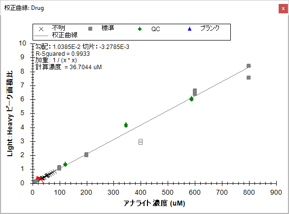
次に、以下の手順を実行して、不明試料の残りをインポートします。
定量データを表示する便利な方法は、ドキュメントグリッドをもう一度使用して、今度は [ ペプチド比率結果 ] ビューを用いることです。
ドキュメントグリッドは以下のようになります。
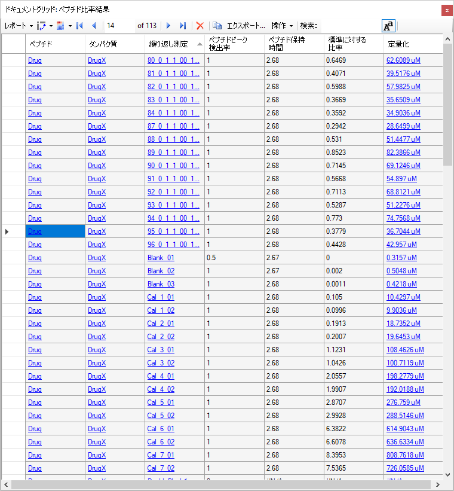
2つの「Cal_5」データポイントの削除後、データを更に調べると、「Cal_7」の点の1つの精度が85%未満であることがわかりますので、これも削除します。「Cal_6」のレベルを超える試料はなく、また「Cal 4」と「Cal 6」の間のレベルの試料は4つしかないため、これによって試料の測定が影響を受けることはほとんどありません。
校正曲線に沿って試料のダイナミックレンジを簡単に視覚化するには、以下の操作を行います。
校正曲線は以下のようになります。
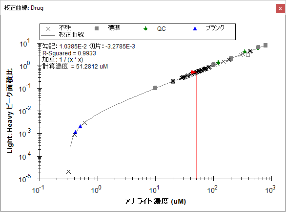
これを見ると、試料の大半が「Cal_2」（20 uM）と「Cal_3」（100 uM）の間にあり、アッセイの線形校正範囲に十分収まっていることが一目でわかります。品質管理 (QC) 試料（known unknown、グラフ内の緑色のひし形）はすべて、測定された精度が85から115%の間にあり、FDAガイダンス基準を満たしています。
ここからの次の手順は、外部統計処理用にデータをエクスポートするか、本ドキュメント内で生物学的なグループ分けを確立し、Skyline内の複数の統計的分析ツールやプラグインを利用することです。これらのオプションは、別のチュートリアルで取り上げます。
本チュートリアルでは、低分子をターゲットとする、プリカーサーイオンの化学式および付加物、そしてプロダクトイオンのm/z値を設定したSkylineドキュメントの作成方法を学びました。三連四重極LC-MS/MSを使用して収集された複数の繰り返し測定データセットをインポートし、ターゲットプロテオミクス用に作成された既存のSkyline機能のいくつかを、低分子データに適用できることを理解しました。